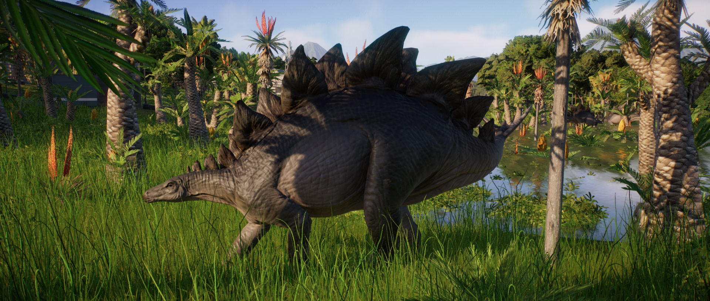

Stegosaurus is one of the most famous dinosaurs ever to have existed, thanks to the distinctive upright plates and spikes that adorn its back and tail. As Stegosaurus shared its habitat with many large predators including Ceratosaurus and Allosaurus, it required a method of defending itself – the long spikes on its tail allow it to lash out at attackers, although the back plates are believed to be for display when attracting a mate.